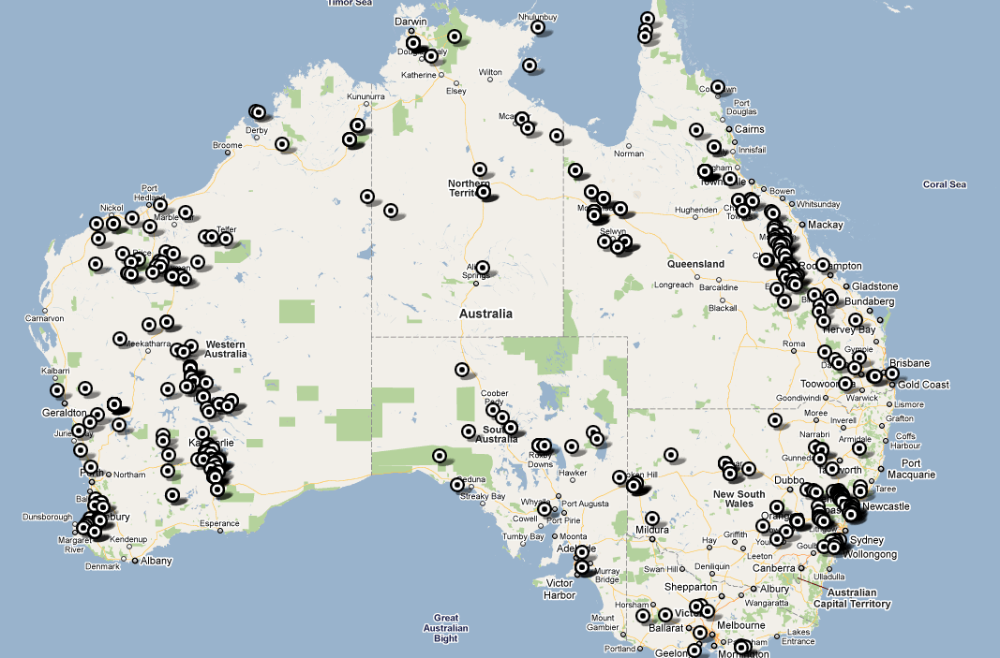

In Australia, mining is one of the largest industries nationwide. Below is a map which shows the locations of every mine in Australia
Minerals are formed when they are concentrated by hydrothermal waters, and rise to the surface of the Earth's mantle (where most of the magma is — just underneath the crust) where they are jettisoned into cooling magma which forms igneous rock, and then follows the path of the rock cycle to form either sedimentary, metamorphic, or igneous rocks.
Minerals are far from being the only thing mined from ores. Other things mined from ores include oil and petroleum, jewels, salt, and other metals including silver, copper, and zinc.
Some minerals, such as gold and coal, don't need to be extracted — they are used without any processing. The other minerals, however, need to be extracted in a certain way. First, the rocks are crushed, then placed in a pool of water and crushed and mixed further. The heavy metal sinks to the bottom — this is taken away for processing. Sometimes, however, microscopic specks remain in the water, and although it might not sound like much, over a long time it accounts to a lot of money lost for the mining company. To fix this, the water is then sprinkled with particles that are attracted to the metals, and also float. Then the microscopic particles float up to the top, and are scraped off and cleansed.